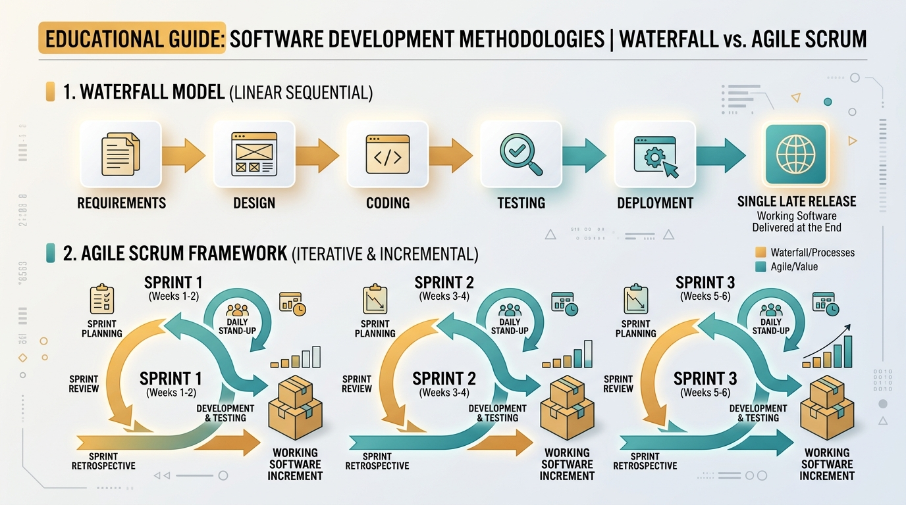
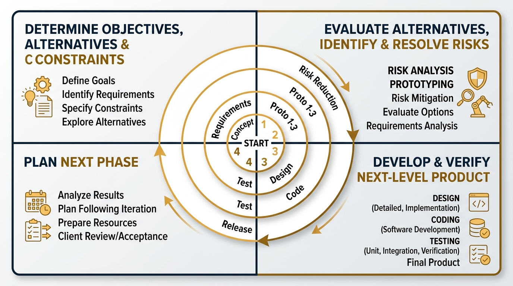
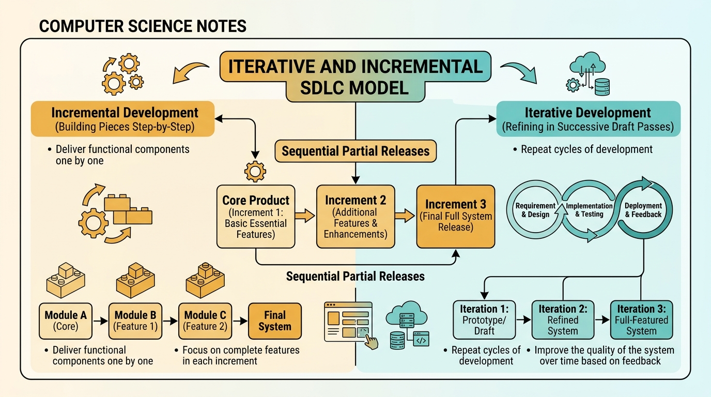
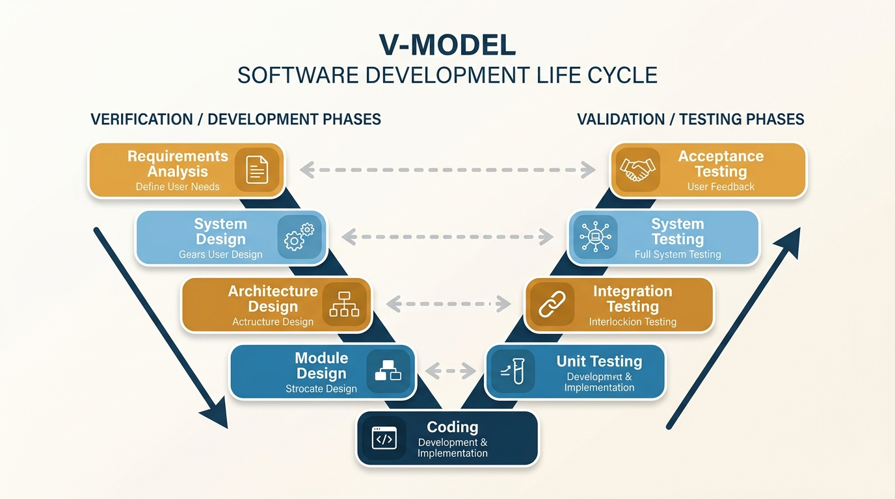

IBPS SO IT Officer · Detailed Study Notes
2. Software Development Life Cycle (SDLC) Models
Comprehensive point-by-point descriptive notes covering Waterfall, Prototyping (Evolutionary vs Throwaway), Spiral (Barry Boehm's Risk Meta-Model), Iterative/Incremental, V-Model (Verification & Validation 1-to-1 Mapping), RAD (60–90 days), Agile (Scrum Roles/Artifacts, XP Pair Programming/TDD, Kanban WIP Limits), and Model Selection Matrix.
-
Core Concept & Origin: First introduced by Winston Royce in 1970. It is a systematic, linear-sequential approach to software development where each phase must be 100% complete and signed off before the next phase begins. Phases do not overlap.
-
Phase Sequence & Deliverables:
1. Feasibility Study: Analyzes technical, operational, and economic viability.
2. Requirements Analysis & Specification: Produces the formal SRS document (requirements must be frozen at phase completion).
3. System Design: Creates High-Level Design (Architecture) and Low-Level Design (Detailed Modules).
4. Implementation / Coding: Converts design into executable source code.
5. Integration & Testing: Combines modules and tests full system against SRS.
6. Deployment & Maintenance: Handover to client and ongoing bug fixing / operational support.
-
Core Prerequisite: All requirements must be well-understood, fixed, and unmodifiable upfront before any design or development begins.
-
Key Advantages:
• Simple, easy to understand, and easy to manage due to rigid phase boundaries and explicit milestone deliverables ("Sign-offs").
• Works exceptionally well for small or well-understood projects where requirements are guaranteed not to change.
-
Major Disadvantages:
• Extremely inflexible; accommodating requirement changes late in the cycle is prohibitively expensive.
• Working software is delivered very late near the end of the SDLC ("Blocking Problem").
• High risk of customer dissatisfaction if initial requirements contained hidden misunderstandings.
🔥 IBPS SO IT Exam Clue: If an exam question mentions "requirements are well understood and frozen", "linear sequential model with rigid milestones", or "no working code delivered until late in project" → The answer is Waterfall Model.

Figure 2.1: Comparison of Waterfall Model (Linear Sequential) vs Agile Scrum Sprints
-
Core Concept: A scaled-down working version ("Prototype") of the system is built early in the SDLC to demonstrate features to the customer and help elicit ambiguous or unclear requirements.
-
Process Steps:
Requirements Gathering → Quick Design → Prototype Construction → Customer Evaluation & Feedback → Prototype Refinement → Engineer Final Product.
-
Classification of Prototypes:
• Evolutionary Prototyping Prototype is built with high architectural quality and incrementally refined and expanded until it becomes the final operational production system.
• Throwaway (Rapid) Prototyping Prototype is built quickly using mockups solely to discover requirements, then discarded; final system code is rewritten cleanly from scratch.
-
Key Advantages:
• Active user involvement reduces requirement ambiguity and prevents late requirement surprises.
• Helps discover missing features early and improves overall user satisfaction.
-
Key Disadvantages:
• Customers may mistake the quick prototype demo for the finished product and demand immediate delivery.
• Developers may compromise software architecture, security, or code quality to build the prototype quickly.
-
Best Used For: Projects with high requirement uncertainty, novel domains, or systems with intensive human-computer user interfaces (GUI).
-
Core Concept & Origin: Formulated by Barry Boehm in 1986. It is a Risk-Driven Meta-Model because it incorporates elements from other models (combines the iterative nature of Prototyping with the systematic phase control of Waterfall).
-
Spiral Geometry & Iteration: Development proceeds in an expanding spiral. Each spiral loop represents a development phase and is divided into 4 Quadrants:
1. Quadrant 1 (Top-Left) - Objective Setting: Identify phase objectives, constraints, and alternative technical solutions.
2. Quadrant 2 (Top-Right) - Risk Assessment & Resolution: Evaluate alternatives, perform thorough risk analysis, build prototypes, and run benchmark tests to resolve technical/cost risks.
3. Quadrant 3 (Bottom-Right) - Engineering & Validation: Construct the product increment (coding and testing using Waterfall or iterative steps).
4. Quadrant 4 (Bottom-Left) - Review & Planning: Evaluate progress with the customer and plan the next spiral iteration.
-
Distinguishing Feature: Explicit Risk Analysis and Risk Management performed at every single spiral loop (most distinctive identifier in exam questions).
-
Advantages & Disadvantages:
• Advantages: Superior risk mitigation, flexible for evolving requirements, ideal for mission-critical software.
• Disadvantages: Prohibitively expensive, requires highly specialized risk assessment expertise; project success depends heavily on risk analysis accuracy.
-
Best Used For: Large, complex, expensive, mission-critical projects with high technical/financial risks (e.g., aerospace control, defense, nuclear software).
🔥 IBPS SO IT Exam Clue: If an exam question asks for "Model featuring explicit Risk Analysis/Management" or "Meta-Model proposed by Barry Boehm divided into 4 Quadrants" → The answer is Spiral Model.

Figure 2.2: Barry Boehm's Spiral Model Structure (4 Quadrants & Iterative Risk Analysis)
-
Core Concept: Software is developed and delivered in small, manageable partial releases called Increments.
-
Operational Mechanism:
• 1st Increment: Delivers the Core Product (basic essential functionality needed by the user).
• Subsequent Increments: Add additional features, enhancements, and refinements step-by-step based on operational feedback.
-
Incremental vs Iterative Distinction:
• Incremental Development: Building the system in functional pieces (e.g., Module A in Inc 1, Module B in Inc 2).
• Iterative Development: Refining the entire system in successive passes (e.g., V1 draft → V2 refined → V3 final).
-
Advantages: Early deployment of partial working software, early value realization for the client, and manageable project scope per increment.

Figure 2.3: Iterative & Incremental SDLC Model Structure (Sequential Core Releases & Iterative Passes)
-
Core Concept: An extension of the Waterfall model where development (Verification) phases map 1-to-1 with corresponding Testing (Validation) phases executed in parallel. The process forms a "V" shape.
-
Verification vs Validation (Crucial Exam Concept):
• Verification ("Are we building the product right?"): Static process of evaluating work products (SRS, design docs, code reviews) to ensure compliance with specifications.
• Validation ("Are we building the right product?"): Dynamic process of executing software to ensure it satisfies user operational expectations.
-
1-to-1 Phase Mapping (Left Side Verification ↔ Right Side Validation):
• Requirements Analysis & SRS ↔ Acceptance Testing (Alpha / Beta testing with customer).
• System Design ↔ System Testing (Performance, Security, Load testing).
• Architecture Design ↔ Integration Testing (Module interaction & interface checks).
• Module / Detailed Design ↔ Unit Testing (Individual function & logic checks).
-
Key Advantage: Test case planning begins early in the lifecycle (e.g., Unit test cases are written during Module Design before coding even starts), minimizing defect propagation cost.
| Verification (Development Phase) |
Mapped Validation (Testing Phase) |
Primary Focus of Testing Phase |
| Requirements Analysis (SRS) |
Acceptance Testing |
Validates operational fit with client end-users (Alpha/Beta) |
| System Design |
System Testing |
Validates overall functional, security, & performance specs |
| Architecture Design |
Integration Testing |
Validates component communication & interface interactions |
| Module / Detailed Design |
Unit Testing |
Validates internal logic of individual methods & functions |

Figure 2.4: V-Model Structure (1-to-1 Mapping between Verification and Validation Testing Phases)
-
Core Concept: High-speed adaptation of the linear sequential model that relies heavily on component-based software construction and automated CASE tools.
-
Key Defining Metric: Extremely short development timeline of 60 to 90 days.
-
5 Sequential RAD Phases:
Business Modeling → Data Modeling → Process Modeling → Application Generation (using automated CASE tools/code generators) → Testing & Turnover.
-
Operational Requirement: System must be highly modularized so that multiple parallel RAD teams can develop independent components simultaneously.
-
Drawbacks: Requires heavy human resources (multiple full-time teams); completely fails if the system cannot be cleanly decomposed into independent modules.
📄 2.7.1 Agile Manifesto (4 Core Values & Principles)
- 1. Individuals and interactions OVER processes and tools.
- 2. Working software OVER comprehensive documentation.
- 3. Customer collaboration OVER contract negotiation.
- 4. Responding to change OVER following a plan.
- Key Principle: Welcome changing requirements even late in development; deliver working software frequently (every few weeks).
🔄 2.7.2 Scrum Framework (Roles, Artifacts, Ceremonies)
-
Sprint: A short, fixed-length iteration lasting 1 to 4 weeks (typically 2 weeks) that produces a shippable product increment.
-
3 Core Scrum Roles:
• Product Owner (PO) Represents customer & business stakeholders; owns, maintains, and prioritizes the Product Backlog.
• Scrum Master (SM) Servant-leader and facilitator; removes impediments/blockers; ensures Scrum process compliance. (Has NO project manager command authority over team).
• Development Team Cross-functional, self-organizing team (typically 5 to 9 members) that builds the working increment.
-
3 Core Scrum Artifacts:
1. Product Backlog: Prioritized master list of all user stories/features desired in the product.
2. Sprint Backlog: Subset of Product Backlog items selected for completion during current Sprint.
3. Increment: Sum of all completed backlog items delivered at the end of a Sprint meeting the "Definition of Done".
-
4 Core Scrum Ceremonies (Meetings):
1. Sprint Planning: PO and team select high-priority backlog items for upcoming Sprint.
2. Daily Scrum / Standup: 15-minute daily sync meeting (3 questions: What did I do yesterday? What will I do today? Any blockers?).
3. Sprint Review: Working product demonstration to stakeholders for feedback at Sprint end.
4. Sprint Retrospective: Internal team reflection on process improvements for next Sprint.
⚡ 2.7.3 Extreme Programming (XP)
-
Core XP Practices:
• Pair Programming: 2 programmers work together on 1 workstation. The Driver writes code; the Navigator continuously reviews logic, catches bugs, and thinks strategically.
• Test-Driven Development (TDD): Developers write automated unit test cases before writing actual production code (Red-Green-Refactor cycle).
• Continuous Integration (CI): Code is integrated and tested in shared repository multiple times a day.
• Refactoring: Restructuring existing code without changing its external behavior to improve maintainability.
📋 2.7.4 Kanban
-
Core Concept: Visual workflow management board using cards and columns (To-Do → In Progress → Testing → Done).
-
WIP Limits (Work-In-Progress Limits): Enforces maximum number of task cards allowed in any column to prevent multitasking bottlenecks and optimize continuous flow.
| SDLC Model |
Requirement Stability |
Risk Handling |
User Involvement |
Delivery Speed |
Primary Key Identifier |
| Waterfall |
Frozen / Well-defined |
Low / Late |
Only at Start & End |
Slow (at end) |
Linear sequential, rigid sign-off milestones |
| Prototyping |
Unclear / Evolving |
Medium |
High (continuous) |
Medium |
Toy working prototype for requirement clarification |
| Spiral |
Evolving / Complex |
Highest (Explicit) |
High at each spiral |
Medium |
Meta-model, 4 Quadrants, Barry Boehm Risk Analysis |
| V-Model |
Stable / Clear |
Medium |
Low |
Slow |
1-to-1 Verification & Validation phase mapping |
| RAD |
Well-defined / Modular |
Low |
Medium |
Ultra-fast (60–90 days) |
Component reuse, CASE tools, parallel teams |
| Agile (Scrum) |
Dynamic / Unstable |
High (incremental) |
Continuous (PO) |
Fast (sprints 1-4 wks) |
Sprints, Backlog, Daily Standup, TDD, Pair Coding |
🔥 Section 2 Rapid Exam Recall Summary:
• Waterfall: Requirements frozen, linear phases, late working code.
• Prototyping: Unclear specs, Evolutionary vs Throwaway prototype.
• Spiral: Barry Boehm, 4 Quadrants, explicit Risk Analysis at each loop.
• V-Model: Module ↔ Unit Test, System Design ↔ System Test, SRS ↔ Acceptance Test.
• RAD: 60–90 days timeline, component reuse, parallel development teams.
• Scrum: PO (Product Backlog owner), Scrum Master (facilitator/no PM authority), Sprints (1-4 wks), Daily Standup (15 min).
• XP: Pair Programming (Driver + Navigator), Test-Driven Development (TDD).
• Kanban: Visual flow board with Work-In-Progress (WIP) limits.